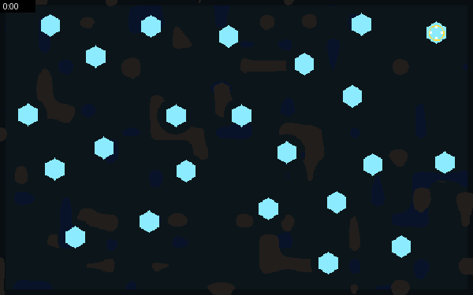
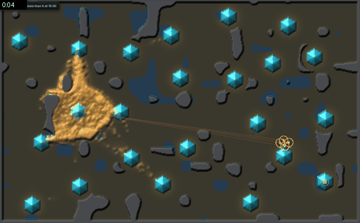
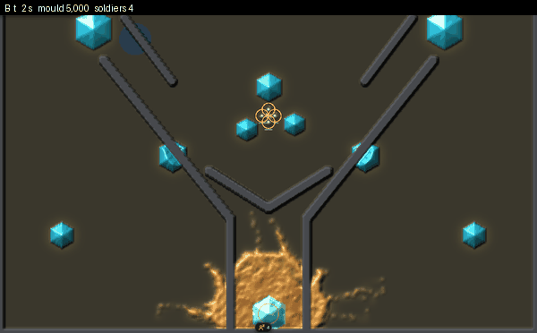
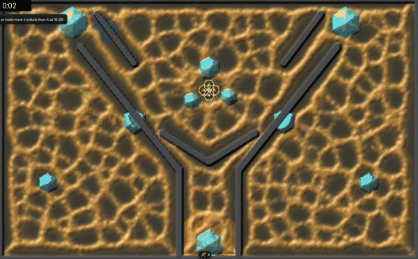
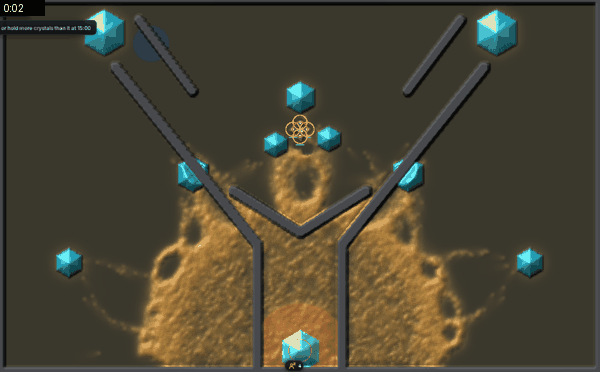
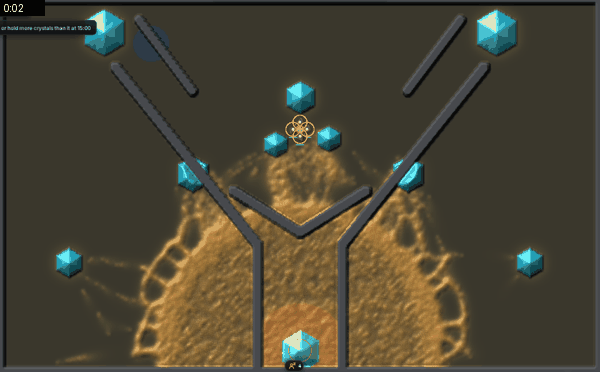
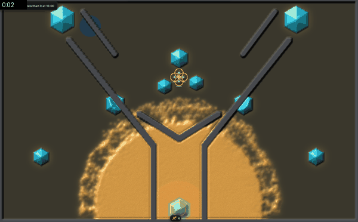

<title>Two Slime Questions</title>
<meta name="claude:viewport-fit-sides" content="cover">
<link rel="stylesheet" href="https://fonts.googleapis.com/css2?family=Space+Grotesk:wght@500;700&family=Inter:wght@400;600&family=JetBrains+Mono:wght@400&display=swap">
<style>
/* Same look as the one-body page: one reading column, films in a grid that stacks on phones */
:root{--bg:#f3f2ee;--fg:#1d1c19;--muted:#68645a;--line:#d8d4c8;--accent:#b8860b;--panel:#e9e6dd;
--display:"Space Grotesk",system-ui,sans-serif;--body:"Inter",system-ui,sans-serif;--mono:"JetBrains Mono",ui-monospace,monospace}
@media (prefers-color-scheme:dark){:root:not([data-theme="light"]){--bg:#16150f;--fg:#ece8dc;--muted:#a39d8c;--line:#38352b;--accent:#e2b13c;--panel:#22201a;color-scheme:dark}}
:root[data-theme="dark"]{--bg:#16150f;--fg:#ece8dc;--muted:#a39d8c;--line:#38352b;--accent:#e2b13c;--panel:#22201a;color-scheme:dark}
body{background:var(--bg);color:var(--fg);font-family:var(--body);font-size:15px;line-height:1.55;padding-left:max(16px,env(safe-area-inset-left,0px));padding-right:max(16px,env(safe-area-inset-right,0px));padding-block:28px 56px}
main{max-width:1080px;margin:0 auto;display:grid;gap:28px}
h1,h2,h3{font-family:var(--display);text-wrap:balance;margin:0}
h1{font-size:2rem} h2{font-size:1.4rem;border-top:1px solid var(--line);padding-top:22px} h3{font-size:1.02rem;font-weight:700}
p,li{max-width:68ch;margin:0} ul,ol{margin:0;padding-left:1.25em;display:grid;gap:6px} section{display:grid;gap:14px}
.lede{color:var(--muted)}
.figs{display:grid;grid-template-columns:repeat(auto-fit,minmax(min(100%,420px),1fr));gap:18px}
figure{margin:0;display:grid;gap:6px;min-width:0;align-content:start}
figure img{width:100%;height:auto;border-radius:4px;background:#000}
figcaption{display:grid;gap:3px;font-size:13.5px;color:var(--muted)}
figcaption b{font-family:var(--display);font-size:15.5px;color:var(--fg)}
figcaption code,.k{font-family:var(--mono);font-size:12px}
.nums{display:flex;flex-wrap:wrap;gap:2px 14px;font-family:var(--mono);font-size:12.5px;font-variant-numeric:tabular-nums}
.q{background:var(--panel);border-radius:6px;padding:16px 18px;display:grid;gap:10px}
.q h3{color:var(--accent)}
table{border-collapse:collapse;font-variant-numeric:tabular-nums;font-size:13.5px} .tw{overflow-x:auto}
td,th{padding:6px 14px 6px 0;text-align:left;border-bottom:1px solid var(--line);vertical-align:top}
th{font-family:var(--display);font-weight:500;color:var(--muted)}
code{font-family:var(--mono);font-size:12.5px}
</style>
<main>
<header style="display:grid;gap:8px">
<h1>Two questions about the slime</h1>
<p class="lede">Made 11-12 at 11:35 your time, after you asked for films and more detail. Both questions come from the deep review in the doc's <b>How we get there</b> tab. Every film but one is the game's own look: the GPU engine and its shading, recorded without a window, with one frame every 2 to 4 game seconds, played fast. The one exception, "Core taken", is the census's CPU engine with its plain drawing.</p>
</header>

<section>
<h2>1. Should the king rule go?</h2>
<h3>The rule today</h3>
<ul>
<li>Every mould has a <b>core</b>: the spot it grows from, the glowing patch at its start.</li>
<li>If soldiers stand within 5 cells of the core for <b>5 seconds</b> with no walker touching them, the core falls.</li>
<li>When the core falls, the mould can <b>never make a new walker again, anywhere on the map</b>. The walkers alive keep going until their food runs out, so the whole mould shrinks to a remnant over the next minutes, however far it had spread.</li>
<li>The screen then says "Core taken: wipe out the mould, or cut it down by 15:00".</li>
<li>The mould guards its core: walkers near it are pulled toward soldiers standing there (<code>core_pull</code> 8).</li>
</ul>
<h3>Two films: core taken, and core held</h3>
<div class="figs">
<figure><figcaption><b>Core taken</b><span>Race world, seed 202, the census's rush hand (it buys 3 more soldiers, so 7). The squad shoots its way into the core; the core falls at 0:48. From then on the far trails are all that is left, and they never grow again. This is the census's CPU engine with its plain drawing, because this is the seed where the census saw the core fall.</span><span class="nums"><span>5,043 walkers at 0:08</span><span>332 at 0:32</span><span>260 at 1:00</span><span>185 at 4:00</span></span></figcaption></figure>
<figure><figcaption><b>Core held</b><span>Race world, seed 6, in the game's own look, with the core unguarded (<code>core_pull=0</code>) and 4 soldiers who don't reinforce. The squad reaches the core at 0:24 and shoots the mould down to a few hundred walkers, but some always touch the soldiers, so the core never falls. The squad dies, and the same mould grows back.</span><span class="nums"><span>709 walkers at 0:32</span><span>squad gone by 1:40</span><span>2,599 at 3:00</span></span></figcaption></figure>
</div>
<p>Same situation, one difference: in the first, 5 clear seconds on one spot ended the mould's growth everywhere. In the second, the mould was just as battered but kept its core, and it came back.</p>
<h3>Why it is a problem</h3>
<p>Race world census, 64 seeds, each plan played by the scripted hands:</p>
<div class="tw"><table>
<tr><th>Plan</th><th>Core taken</th><th>Mould wiped</th><th>Ran to the 15:00 cap</th></tr>
<tr><td>Farm (harvest crystals)</td><td>0</td><td>0</td><td>64 of 64</td></tr>
<tr><td>Wall</td><td>0</td><td>0</td><td>64 of 64</td></tr>
<tr><td>Fort (turrets)</td><td>0</td><td>0</td><td>64 of 64</td></tr>
<tr><td>Rush (walk at the core)</td><td>34</td><td>2</td><td>41 of 64</td></tr>
<tr><td>Strike (the AI's attack plan)</td><td>12</td><td>9</td><td>55 of 64</td></tr>
<tr><td>Idle (do nothing)</td><td>0</td><td>0</td><td>62 of 64</td></tr>
</table></div>
<ul>
<li><b>One spot decides the game.</b> Only the plans that walk to the core ever cripple the mould. Farming, walls and turrets never do, whatever they hold. So the mould's network, its supply lines and how far it has spread don't matter to winning: the best plan is always "go to the core".</li>
<li><b>It blocks other rules.</b> A "recoil" rule, where the mould pulls back from sustained fire, was tried and dropped only because random play then walked onto the unguarded core.</li>
<li><b>Idle doesn't lose.</b> The idle squad reached the cap in 62 of 64 games, though you ruled on 11-11 that a player who does nothing should be overrun. That needs a second change, below.</li>
</ul>
<h3>What could replace it</h3>
<ul>
<li><b>No core (headless).</b> Already in the code for the Sprawler tier. There is nothing to take: you win by wiping the mould out, or by <b>starving</b> it, cutting it off from its food so the far parts die. Its start spot stays its best-fed, best-defended place, but losing it is a loss, not death.</li>
<li><b>A core that regrows</b> (planned for the Trunk tier) or <b>a core that moves</b> (planned for the Drifter): taking it hurts for a while, then the mould recovers or relocates.</li>
<li><b>Keep the king only for some kinds.</b> A mould with one fatal weak spot is a good tier to learn on, just not every tier.</li>
</ul>
<p>The cost: without a king, more games run to the cap until the mould gets stronger over time on its own, so an idle player loses. The review suggests testing both together: no king, plus the mould pushing harder as it feeds (the <code>overrun</code> rule, already in the code and off).</p>
<div class="q">
<h3>The question</h3>
<p>Should taking the core stay an instant win for every mould? My suggestion: make headless the default, keep a king-type core as one tier's weakness, and turn on escalation so idle loses. I'd test it first, and only make it the default after you've played it.</p>
<p><b>Your answer (20:21 UTC):</b> "remove the king rule. As long as the slime has food/crystal energy it can make walkers. Headless." Done for every mould, tiers included: holding its home stops nothing, and the home still pulls the body onto soldiers standing there. Over 8 race-world seeds on the census engine nothing wiped the mould in 15 minutes (the rush took the core in 34 of 64 games before); farm and the strike AI beat idle 8 of 8, the shortest game was 2:46. Escalation is not on yet.</p>
</div>
</section>

<section>
<h2>2. Mesh at the fronts, trunks behind?</h2>
<h3>The words</h3>
<ul>
<li><b>Mesh</b>: a fine net of many thin tubes with lots of small holes (loops). It covers ground and explores.</li>
<li><b>Trunks</b>: a few thick tubes between food sources. They carry the food.</li>
<li><b>Front</b>: the edge where the mould is still growing into new ground.</li>
<li>A real <i>Physarum</i> grows as a fan: a solid sheet at its leading edge, a mesh just behind it, and a few thick veins further back. Parts that carry no food fade (Kuroda et al. 2015).</li>
</ul>
<h3>What each shape means for play</h3>
<div class="tw"><table>
<tr><th>Shape</th><th>Cutting it</th><th>Reading it</th></tr>
<tr><td>Mesh everywhere</td><td>Many loops, so cutting one tube does nothing; a siege needs many cuts</td><td>Hard to tell where it is heading</td></tr>
<tr><td>Trunks everywhere (today's strands)</td><td>One cut can starve the far side</td><td>Easy to read, but it looks like strings and its edge is specks</td></tr>
<tr><td>Mesh or sheet at the front, trunks behind</td><td>The trunks are supply lines worth cutting</td><td>The front shows where it is growing, so you can get ahead of it</td></tr>
</table></div>
<h3>Five films of the same Fork round, idle squad</h3>
<p>All but the first use 25,000 starting walkers with the one-walker-a-cell rule held on, because that is what makes a continuous body. Nothing here is tuned for play yet: at about 1:25 the starting walkers all run out of their starting food at once, which a staggered start would smooth out.</p>
<div class="figs">
<figure><figcaption><b>A. Today</b><span>5,000 starting walkers. Strands from food to food, a dotted edge.</span><span class="nums"><span>3,855 walkers at 4:00</span><span>squad alive</span></span></figcaption></figure>
<figure><figcaption><b>B. Mesh everywhere</b><span>Walkers scattered over the map at the start, no food scent: the closest to Jones's own pictures. The mesh coarsens slowly but is still a mesh at 0:46.</span><span class="nums"><span>30,402 walkers at 0:30</span><span>squad wiped at 0:47</span></span></figcaption></figure>
<figure><figcaption><b>C. Sheet with trunks</b><span>Grown from the core: one continuous sheet with trunks out to the crystals. After the die-off at 1:25, a network of tubes between the crystals.</span><span class="nums"><span>28,768 walkers at 1:00</span><span>12,290 at 1:30</span><span>squad wiped at 1:56</span></span></figcaption></figure>
<figure><figcaption><b>D. Sheet, then mesh, then trunks</b><span>As C, with the sensor angle Jones calls "never settles" (22.5° instead of 45°, sensors 5 cells out instead of 9). By 1:00 a network spans the map; at 1:30 a fine mesh near the core with trunks out to the crystals; by 2:00 mostly trunks with a few loops.</span><span class="nums"><span>29,051 walkers at 1:00</span><span>14,609 at 1:30</span><span>15,031 at 2:00</span><span>4 soldiers alive at 2:00</span></span></figcaption></figure>
<figure><figcaption><b>E. Slow front</b><span>As C, but walkers move at 15% speed where the trail is thin and full speed in thick tubes. The edge becomes a fan with a scalloped rim. It moves too slowly to reach new food, so it starves.</span><span class="nums"><span>25,290 walkers at 1:00</span><span>5,512 at 1:30</span><span>3,025 at 2:00</span></span></figcaption></figure>
</div>
<div class="q">
<h3>The question</h3>
<p>Which of these is closest to the creature you want: a mesh everywhere (B), a sheet with trunks (C), or a front that changes from sheet to mesh to trunks as it ages (D, and E once its edge can still reach food)? My suggestion: D as the base. It is the only one where the front, the middle and the supply lines each look different, and it costs no new rule. Then I'd add a gentler slow front so its edge fans out like E without starving.</p>
<p><b>Your answer (20:21 UTC):</b> "I will playtest the shapes. Not sure what it best from these." Each one is now a key in the game; see below.</p>
</div>
</section>

<section>
<h2>How to try them yourself</h2>
<p>Updated 12 Nov, 20:45 UTC, after your answers: every mould is now headless (no king rule), and each film is one key in the game. On the desktop, in the repo, after the PR merges: <code>cargo run --release --bin larder-world -- shape=d</code>, with the letter of the film.</p>
<div class="tw"><table>
<tr><th>Key</th><th>Shape</th><th>Idle squad on the Fork, now</th></tr>
<tr><td><code>shape=a</code></td><td>Today: strands from food to food</td><td>alive at 4:00; 3,855 walkers</td></tr>
<tr><td><code>shape=b</code></td><td>Mesh everywhere</td><td>wiped at 2:50 (was 0:47); 48,617 walkers</td></tr>
<tr><td><code>shape=c</code></td><td>Sheet with trunks</td><td>alive at 4:00 (was wiped at 1:56); 13,406 walkers</td></tr>
<tr><td><code>shape=d</code></td><td>Sheet, then mesh, then trunks</td><td>alive at 4:00; 16,140 walkers</td></tr>
<tr><td><code>shape=e</code></td><td>Slow front</td><td>alive at 4:00; starves to 3,033 walkers</td></tr>
</table></div>
<p class="lede">A dense mould is the same body cut into more, smaller walkers, so each walker now hits soldiers, buildings and the larder for 5,000 divided by its walkers: a fifth as hard at 25,000. Before that, B and C wiped an idle squad in under two minutes because of the walker count, not the shape. <code>mass=1</code> plays the old way. Shots are unchanged. Logs: <code>Reports/slime-questions-2026-11-12/raw/shapes/</code> in the repo.</p>
</section>
</main>
